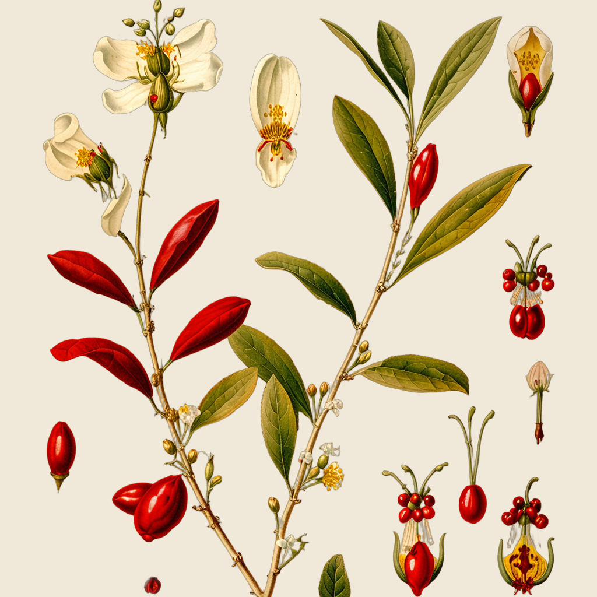
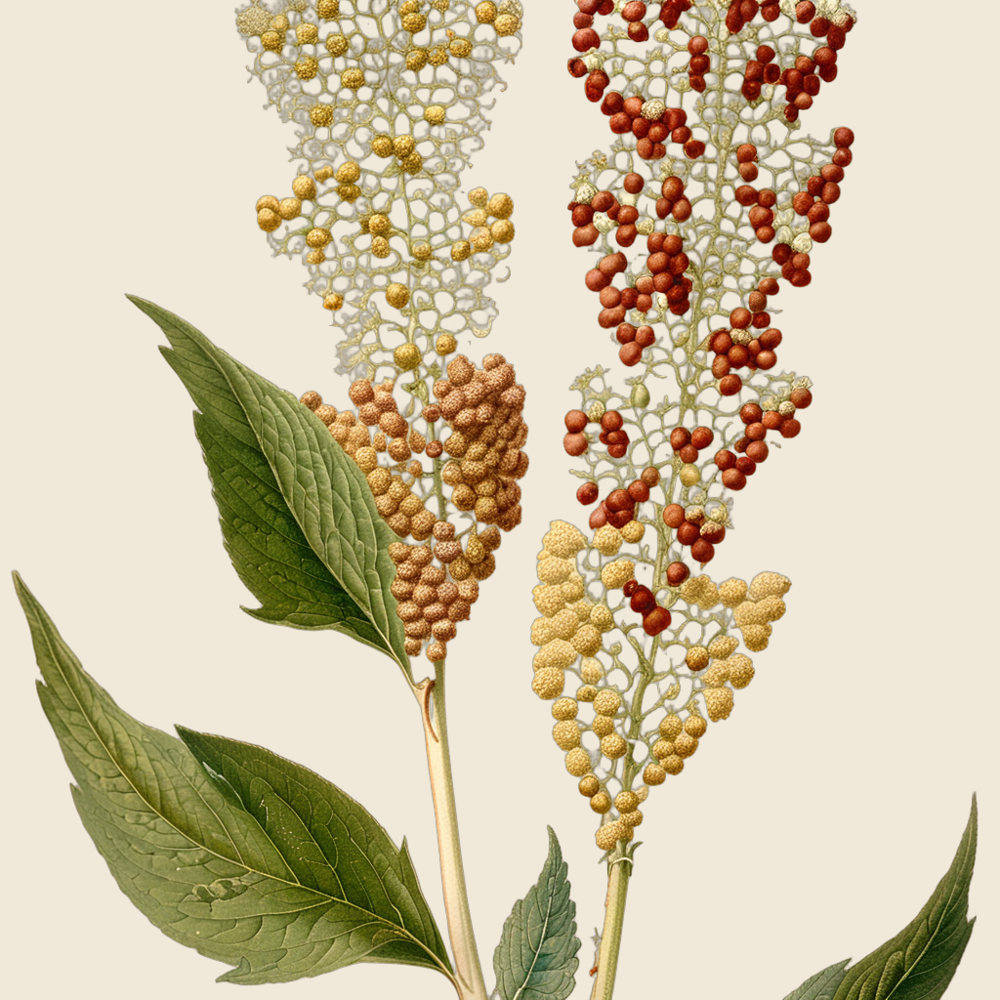
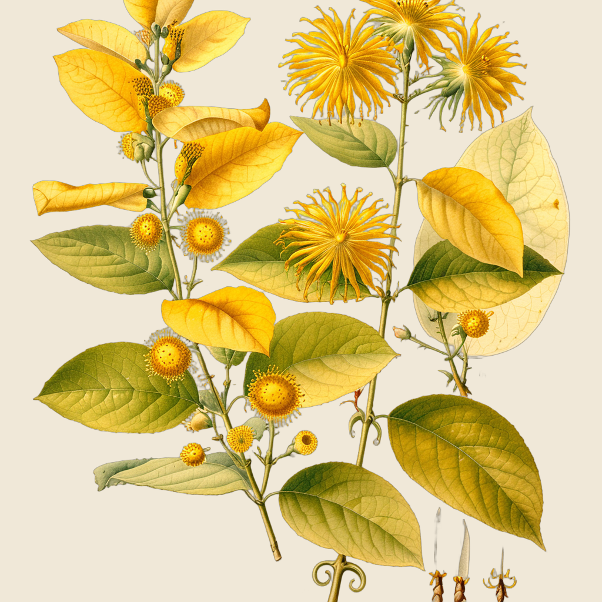
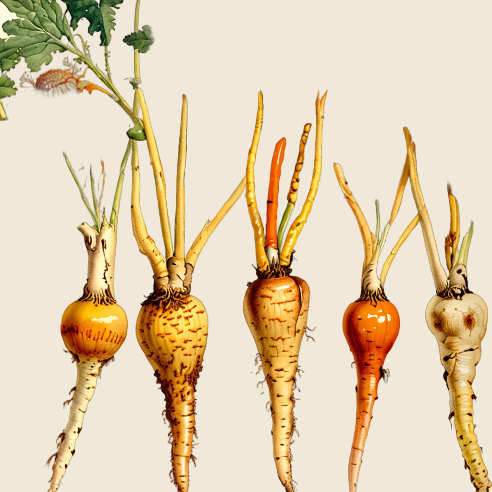

| Leaf shape | 4/5 |
| Flower structure | 4/5 |
| Root/stem | 4/5 |
| Overall resemblance | 4/5 |
| Average | 4.00 PASS |
Oval alternate leaves with venation, small flowers at nodes, red drupes, woody branch. Multi-panel atlas layout showing fruit stages. Very recognizable as Erythroxylum.
Ref: Atlas illustration plate — illustration-to-illustration ControlNet.

| Leaf shape | 4/5 |
| Flower structure | 4/5 |
| Root/stem | 3/5 |
| Overall resemblance | 4/5 |
| Average | 3.75 PASS |
Dense colorful panicle with multi-colored seed clusters (red, white, golden). Triangular leaves correct. Dramatic improvement from v1 (was 2.25). Line-drawing reference transferred perfectly via ControlNet.
Ref: Botanical line drawing — illustration-to-illustration ControlNet.

| Leaf shape | 4/5 |
| Flower structure | 3/5 |
| Root/stem | 4/5 |
| Overall resemblance | 4/5 |
| Average | 3.75 PASS |
Yellow flowers, large leaves, vine-like habit. Opposite elliptical leaves correct. Hook thorns somewhat visible. Recognizable as tropical climbing plant.
Ref: Cropped atlas plate — photo-to-illustration ControlNet.
| Leaf shape | 3/5 |
| Flower structure | 4/5 |
| Root/stem | 3/5 |
| Overall resemblance | 4/5 |
| Average | 3.50 PASS |
Orange berries in papery husks unmistakable Physalis. Yellow flowers visible. Beautiful watercolor atlas style. Leaves present but not prominently heart-shaped.
Ref: Photo reference — photo-to-illustration ControlNet.

| Leaf shape | 4/5 |
| Flower structure | 3/5 |
| Root/stem | 4/5 |
| Overall resemblance | 4/5 |
| Average | 3.75 PASS |
Major improvement (v3). Frilly pinnate carrot-like leaves now correct. Row of tuberous roots with variety of shapes. Wikimedia cropped photo reference transferred structure well via ControlNet. Improved from v2 (was 3.0) and v1 (was 2.0).